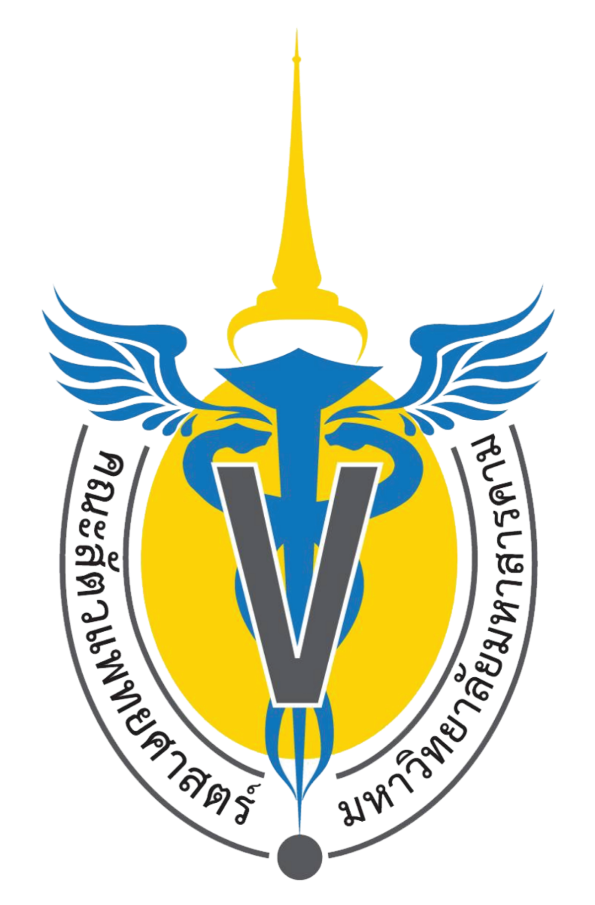

เมนูหลัก
เกี่ยวกับเรา
บริการ
ข่าวสาร
E-Form/Online Form
ติดต่อเรา
เอกสารเผยแพร่
แกลลอรี่ความรู้
รายงานการประชุม
ลิงค์ภายใน
มหาวิทยาลัยมหาสารคาม
คณะสัตวเเพทยศาสตร์ มหาวิทยาลัยมหาสารคาม
สำนักงานศึกษาทั่วไป
กองกิจการนิสิต
ศูนย์พัฒนาและประกันคุณภาพการศึกษา
ระบบการศึกษา(REG)
สำนักวิทยบริการ
หน่วยงานภายในโรงพยาบาลสัตว์
ลิงค์ภายนอก
มหาวิทยาลัยมหาสารคาม
คณะสัตวเเพทยศาสตร์ มหาวิทยาลัยมหาสารคาม
สำนักงานศึกษาทั่วไป
กองกิจการนิสิต
ศูนย์พัฒนาและประกันคุณภาพการศึกษา
ระบบการศึกษา(REG)
สำนักวิทยบริการ
หน่วยงานภายในโรงพยาบาลสัตว์
ติดต่อ

โรงพยาบาลสัตว์เพื่อการเรียนการสอน
คณะสัตวเเพทยศาสตร์ มหาวิทยาลัยมหาสารคาม